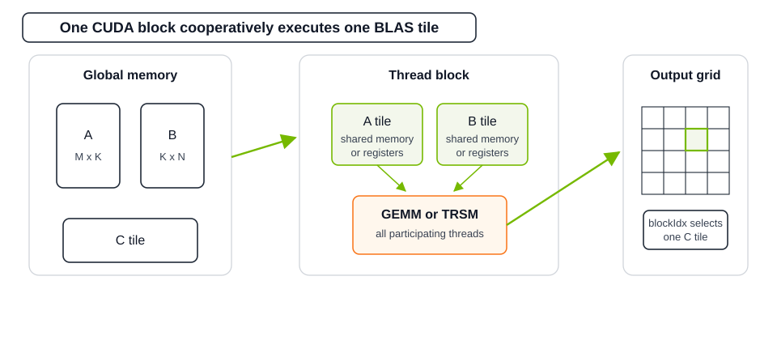
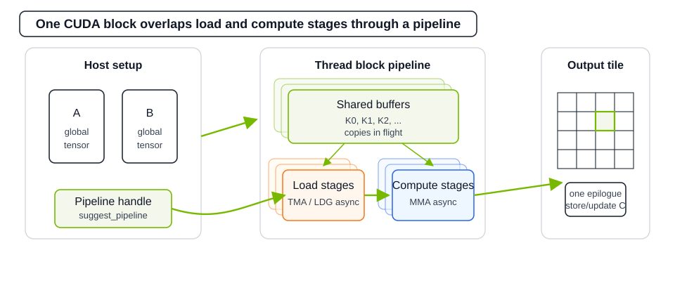

NVIDIA cuBLASDx#
The cuBLAS Device Extensions (cuBLASDx) library enables you to perform selected linear algebra functions known from cuBLAS inside your CUDA kernel. Available routines include General Matrix Multiplication (GEMM) and Triangular Solve (TRSM). Fusing linear algebra routines with other operations can decrease the latency and improve the overall performance of your application.
The documentation consists of the following components:
A GEMM quick start guide, Using cuBLASDx GEMM.
A TRSM quick start guide, Using cuBLASDx TRSM.
An advanced pipelining API guide, Using Pipelined GEMM.
A learning path through examples, Learning Path Through Examples.
An API Reference for a comprehensive overview of the provided functionality.
If you are implementing GEMM from scratch, start with Quick Installation Guide, then read Using cuBLASDx GEMM, and use Learning Path Through Examples to choose the nearest working example before tuning.
The cuBLASDx Library Currently Provides:#

Customizability, options to adjust BLAS routines for different needs (size, precision, type, targeted CUDA architecture, etc.).
Flexibility of performing accumulation and fusion in either shared memory or registers.
Ability to fuse BLAS kernels with other operations in order to save global memory trips.
Compatibility with future versions of the CUDA Toolkit.
- Autovectorizing high performance data movement between shared and global memory.
Opaque analytical generation of swizzled layouts for best performance.
Currently dispatches to either vectorized
LDG+STSorLDGSTS.
The Pipelining Extension To cuBLASDx (0.5.0+) Offers:#

- Automatic N-buffer staged pipelined GEMM execution.
Overlaps asynchronous load stages with asynchronous compute stages; multiple stages of both kinds can be in flight.
Runs one epilogue stage after K-stage accumulation completes.
Increases the number of bytes and instructions in flight during computation.
Better exposing GPU asynchronicity to
cuBLASDxusers.Barrier based synchronization, compatible with Turing+ GPUs.
- Automatic dispatching between
TMA / LDGSTS / LDG+STSfor global to shared transfers. Fully asynchronous transfers where possible.
Automatic maximal vectorization and equal work division among threads.
Opaque generation of swizzled layouts for shared memory.
- Automatic dispatching between
Automatic internal exposure of selected
WGMMA / 1SM UTCMMAinstructions.Automatic opaque warp specialization in selected cases.
Automatic opaque register trading in selected cases.
The same interface on all CUDA architectures.